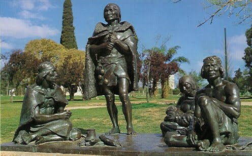

Charrúas
Los charrúas fueron un pueblo amerindio que en el siglo XVI vivía en el sur de lo que hoy es Uruguay. En el siglo XVIII los charrúas ampliaron su territorio en su guerra contra españoles y guaraníes misioneros avanzando sobre el norte de Uruguay, el sur del actual estado brasileño de Río Grande del Sur y la provincia argentina de Entre Ríos, alcanzando ocasionalmente también a las de Corrientes y Santa Fe. A raíz de ese avance se fusionaron con otros pueblos que ocupaban esos territorios, tales como los chanás y minuanes y se fusionaron y/o exterminaron a pueblos presumiblemente cáingangs como los yaros y bohanes. El término charrúa pasó a ser el denominador común de ese conjunto de pueblos, por lo que hoy en conjunto se los denomina como complejo charrúa o nación charrúa

Los charrúas propiamente dichos han sido agrupados cultural o étnicamente en el denominado complejo charrúa junto con los yaros, bohanes, guenoas (o güenoas), chanás y minuanes. Los chanás o chanaes son incluidos también como parte del complejo chaná-timbú. Sobre las relaciones entre estos grupos hay diversas opiniones:
Para Samuel Lafone Quevedo (18971 y 19002) los charrúas eran una "nación" pámpida integrante del tipo guaycurú y los demás pueblos citados eran "parcialidades" de la misma nación.
Para Samuel Lothrop (19323 y 19464) la charrúa y las demás eran "tribus distintas" emparentadas culturalmente y física y lingüísticamente semejantes a los guaycurúes del norte.
Para Antonio Serrano (19365 y 19466) los charrúas eran una "nación" con características culturales propias, siendo las demás "tribus" citadas parte de la "nación charrúa".
Existen diversas estimaciones sobre la población de charrúas y etnias relacionadas al momento de la llegada de los españoles. Las mismas varían entre 8000 (5000 en Uruguay) y 100 000 personas o más. En 1828, cuando Uruguay se independizó, la población indígena era de 30 000 personas y la de blancos de 70 000. Según algunos estudios históricos ese número de indígenas y descendientes de estos en el territorio uruguayo era superior al que había en la época de la conquista. Ello se debe a que el territorio recibió una importante inmigración de guaraníes que habían huido de las misiones jesuíticas destruidas y que se establecieron al norte del río Negro